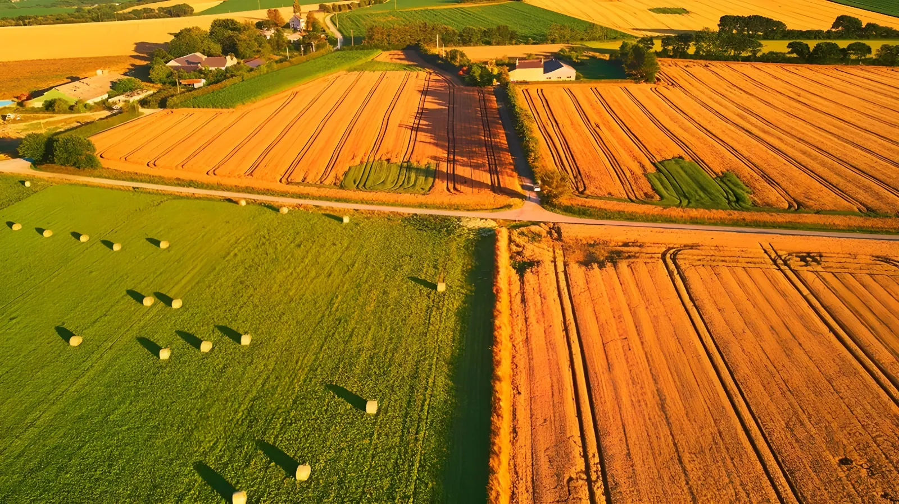
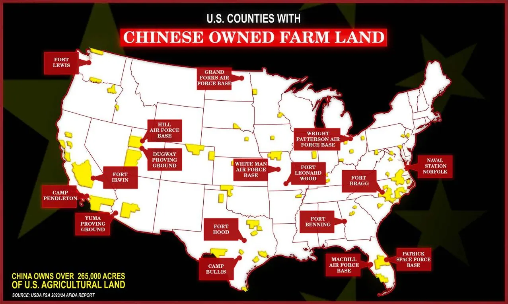

Depuis le début des années 2010, des entités chinoises ont progressivement acquis des terres agricoles sur le sol américain, passant de moins de 14 000 acres en 2010 à un pic de près de 384 000 acres en 2021. Si ce volume représente moins de 0,02 % des terres agricoles privées aux États-Unis, la question a pris une dimension nationale et sécuritaire inédite : bases militaires exposées à des voisins suspects, filières agroalimentaires stratégiques aux mains de groupes sino-affiliés, et un débat qui révèle les tensions profondes entre sécurité nationale, droits de propriété et rivalité sino-américaine.
En 2010, les entités chinoises ne détenaient que 13 720 acres de terres agricoles américaines. En une décennie, ce chiffre a bondi à 383 935 acres en 2021, soit une multiplication par vingt-huit. Ce pic correspond notamment à deux acquisitions majeures : le rachat en 2013 de Smithfield Foods, le premier producteur mondial de porc, par le groupe chinois WH Group pour environ 4,7 milliards de dollars, opération qui a transféré près de 100 000 acres de terres agricoles dans des mains sino-affiliées ; et l'acquisition en 2017 de Syngenta, géant suisse des semences et des pesticides, par ChemChina, introduisant plusieurs milliers d'acres de parcelles de recherche agronomique dans le giron chinois.
Depuis 2021, la tendance s'est inversée. Les données du USDA (Département américain de l'Agriculture) pour fin 2023 font état d'environ 277 336 acres détenues par des entités chinoises dans 30 États, soit une baisse de 27 % par rapport au pic de 2021. Ce recul est le produit conjoint des cessions forcées, des projets bloqués et du durcissement législatif à l'échelle fédérale et étatique.
En novembre 2021, le groupe chinois Fufeng, producteur de bio-fermentation et d'additifs alimentaires, annonce l'achat de 370 acres au nord de Grand Forks, dans le Dakota du Nord, pour y construire une usine de transformation du maïs d'un montant de 700 millions de dollars. Ce qui aurait pu rester une décision économique locale déclenche une alarme nationale : le site se trouve à environ 19 kilomètres de la base aérienne de Grand Forks, un centre névralgique pour les drones militaires américains et leurs communications avec les satellites.
Un mémo de l'US Air Force pointe les risques d'espionnage : la proximité permettrait à Fufeng de capter des signaux numériques sensibles liés aux systèmes de drones et aux liaisons satellite. Le Comité sur les investissements étrangers aux États-Unis (CFIUS) reconnaît ne pas avoir juridiction sur cette transaction, révélant une faille législative béante. En février 2023, après deux ans de controverse, le conseil municipal de Grand Forks rejette définitivement le projet de développement. Fufeng conserve néanmoins la propriété des 370 acres.

WH Group (Chine) rachète Smithfield Foods pour ~4,7 milliards de dollars, transférant près de 100 000 acres de terres agricoles dans des mains sino-affiliées. C'est la plus grande acquisition d'une entreprise américaine par un groupe chinois à cette date.
ChemChina acquiert Syngenta, groupe suisse des semences et pesticides, pour 43 milliards de dollars. Des milliers d'acres de parcelles de recherche agricole américaines passent ainsi sous contrôle sino-affilié.
Pic des acquisitions chinoises à 383 935 acres. La même année, Fufeng Group achète 370 acres à Grand Forks (Dakota du Nord), à 19 km de la base aérienne locale. L'affaire devient un cas d'école sur les failles du CFIUS.
Grand Forks rejette le projet Fufeng. Biden ordonne à une société crypto sino-affiliée de vendre une propriété à Cheyenne (Wyoming), près d'une base de missiles balistiques. Environ vingt-cinq États adoptent des lois restrictives.
Trump signe un mémorandum de sécurité nationale ciblant les investissements étrangers en agriculture. La CFIUS reçoit mandat d'élargir sa juridiction aux transactions foncières agricoles proches des sites sensibles.
La secrétaire à l'Agriculture Brooke Rollins présente le National Farm Security Action Plan : interdiction de nouveaux achats chinois, obligation de cession dans l'année pour certains propriétaires existants, peines de prison pouvant aller jusqu'à cinq ans.
Lors de sa visite d'État à Pékin, Trump adopte une position plus nuancée : interviewé par Fox News depuis la capitale chinoise, il défend la présence d'investisseurs chinois comme soutien aux prix fonciers agricoles — volte-face qui ravive le débat aux États-Unis.
Le débat sur les terres agricoles chinoises aux États-Unis mêle plusieurs dimensions distinctes. La première est strictement sécuritaire : des parcelles proches de bases militaires — missiles balistiques au Wyoming, drones au Dakota du Nord, centres de renseignement en Caroline du Nord — pourraient, selon des experts gouvernementaux, offrir à Pékin des points d'observation, de perturbation électromagnétique, ou d'introduction d'agents pathogènes agricoles (agroterrorisme). La loi chinoise oblige par ailleurs toute entreprise à coopérer avec les services de renseignement du Parti communiste si celui-ci le requiert, ce qui annule, selon ces experts, toute distinction entre investisseur privé et bras de l'État.
La deuxième dimension est économique et alimentaire : WH Group contrôle Smithfield, qui représente une fraction significative de la production porcine américaine. Syngenta, entre les mains de ChemChina, pèse dans la recherche semencière. Une perturbation délibérée de ces chaînes d'approvisionnement en période de tension pourrait affecter la sécurité alimentaire américaine. Enfin, la troisième dimension est juridique et libérale : des universitaires comme Danny Munch (American Farm Bureau) ou Scott Lincicome (Cato Institute) rappellent que le Canada détient à lui seul 15,3 millions d'acres, soit trente fois plus que la Chine, et que l'interdiction discriminatoire de vendre à des ressortissants étrangers pose des questions constitutionnelles sérieuses — des citoyens chinois vivant en Floride ont d'ailleurs contesté devant les tribunaux une loi étatique d'interdiction.
L'affaire des terres agricoles chinoises met à nu une contradiction structurelle de la politique américaine : d'un côté, une rhétorique de fermeté sur la souveraineté alimentaire et la sécurité nationale ; de l'autre, une dépendance réelle aux capitaux étrangers pour soutenir les prix fonciers dans des États agricoles qui votent massivement républicain. Le retournement de Trump à Pékin en mai 2026 — défendant les investisseurs chinois pour ne pas « faire chuter les prix des fermes » — illustre cette tension. Ni pure menace ni épiphénomène, la question des terres chinoises est avant tout un miroir des ambiguïtés d'une superpuissance qui doit gérer simultanément sa rivalité avec Pékin et les intérêts économiques de ses propres agriculteurs.
Since the early 2010s, Chinese entities have gradually acquired agricultural land on American soil, rising from fewer than 14,000 acres in 2010 to a peak of nearly 384,000 acres in 2021. While this represents less than 0.02% of privately held U.S. farmland, the issue has taken on an unprecedented national security dimension: military bases exposed to suspicious neighbours, strategic agri-food chains in the hands of China-linked groups, and a debate that reveals deep tensions between national security, property rights, and Sino-American rivalry.
In 2010, Chinese entities held just 13,720 acres of American agricultural land. Within a decade, that figure had soared to 383,935 acres by 2021 — a twenty-eight-fold increase. This peak is largely attributable to two major acquisitions: the 2013 purchase of Smithfield Foods, the world's largest pork producer, by China's WH Group for approximately $4.7 billion, which transferred roughly 100,000 acres of farmland into Chinese-affiliated hands; and the 2017 acquisition of Swiss seeds-and-pesticides giant Syngenta by ChemChina, placing thousands of acres of American agricultural research plots under Sino-affiliated control.
Since 2021, the trend has reversed. USDA data for end-2023 shows approximately 277,336 acres held by Chinese entities across 30 states — a 27% decline from the 2021 peak, driven by forced divestitures, blocked projects, and tightening legislation at both federal and state level.
In November 2021, Chinese bio-fermentation and food-additive company Fufeng Group announced the purchase of 370 acres north of Grand Forks, North Dakota, to build a $700 million corn-milling plant. What could have remained a local economic decision triggered a national alarm: the site sits roughly 12 miles from Grand Forks Air Force Base, a critical hub for U.S. military drones and their satellite communications.
A U.S. Air Force memo flagged espionage risks: the proximity could allow Fufeng to intercept sensitive digital signals tied to drone systems and satellite uplinks. The Committee on Foreign Investment in the United States (CFIUS) acknowledged it lacked jurisdiction over the transaction, revealing a significant legislative gap. In February 2023, after two years of controversy, the Grand Forks City Council definitively rejected the development plan. Fufeng nonetheless retains ownership of the 370 acres.
WH Group (China) acquires Smithfield Foods for ~$4.7 billion, transferring roughly 100,000 acres of agricultural land to Chinese-affiliated ownership — at the time, the largest-ever takeover of an American company by a Chinese group.
ChemChina acquires Syngenta, the Swiss seeds and pesticides giant, for $43 billion. Thousands of acres of U.S. agricultural research plots pass under Sino-affiliated control.
Chinese holdings peak at 383,935 acres. The same year, Fufeng Group buys 370 acres in Grand Forks, North Dakota, 12 miles from the local air base — the affair becomes a textbook case of CFIUS loopholes.
Grand Forks rejects the Fufeng project. Biden orders a Chinese-backed crypto firm to sell property near a ballistic missile base in Cheyenne, Wyoming. Around 25 states enact restrictive laws.
Trump signs a national security memorandum targeting foreign adversary investments in agriculture. CFIUS is mandated to broaden its jurisdiction to cover agricultural land transactions near sensitive sites.
Agriculture Secretary Brooke Rollins unveils the National Farm Security Action Plan: a ban on new Chinese purchases, mandatory divestiture for certain existing owners within a year, and prison terms of up to five years for non-compliance.
During his state visit to Beijing, Trump adopts a more nuanced stance: interviewed by Fox News from the Chinese capital, he defends Chinese investors as a support for farmland prices — a U-turn that reignites the debate at home.
The debate over Chinese farmland in the United States blends several distinct dimensions. The first is strictly security-related: parcels near military bases — ballistic missile facilities in Wyoming, drone hubs in North Dakota, intelligence centres in North Carolina — could, according to government experts, provide Beijing with vantage points for surveillance, electromagnetic disruption, or the introduction of agricultural pathogens. Chinese law compels every company to cooperate with Party intelligence services on request, which, these experts argue, renders the distinction between private investor and state arm largely meaningless.
The second dimension is economic and food-related: WH Group controls Smithfield, which accounts for a significant share of U.S. pork output. ChemChina-owned Syngenta wields influence in seed research. A deliberate disruption of these supply chains during a period of tension could threaten American food security. Finally, there is a legal and liberal dimension: scholars such as Danny Munch (American Farm Bureau) and Scott Lincicome (Cato Institute) point out that Canada alone holds 15.3 million acres — thirty times more than China — and that discriminatory bans on selling to foreign nationals raise serious constitutional questions. Chinese citizens living in Florida have already challenged a state prohibition law before the federal courts.
The Chinese farmland affair exposes a structural contradiction in American policy: on one side, tough rhetoric about food sovereignty and national security; on the other, a genuine dependence on foreign capital to sustain land prices in farm states that vote overwhelmingly Republican. Trump's reversal in Beijing in May 2026 — defending Chinese investors to avoid "making farm prices drop" — encapsulates this tension. Neither pure threat nor marginal side-show, the question of Chinese-held farmland is above all a mirror of the ambiguities of a superpower that must simultaneously manage its rivalry with Beijing and the economic interests of its own farming communities.